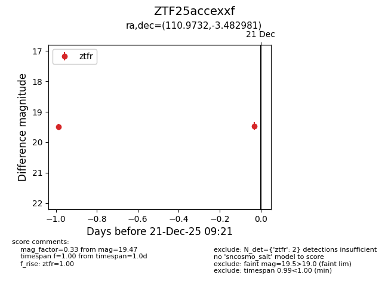
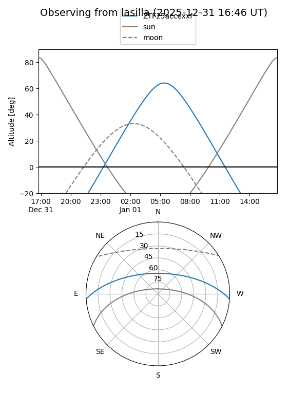
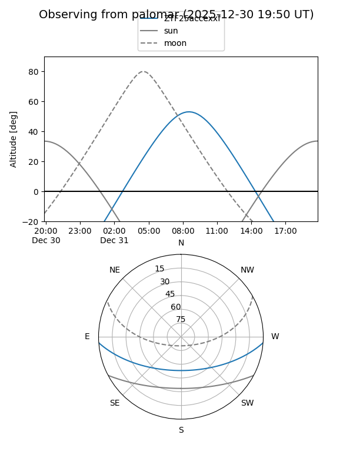
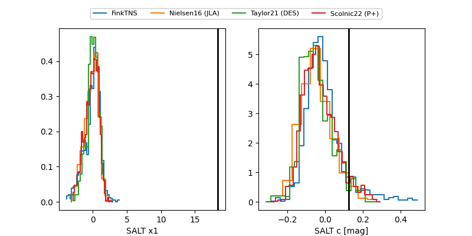

ZTF25accexxf
Target ZTF25accexxf at 2025-12-22 14:03
Aliases and brokers:
FINK: fink-portal.org/ZTF25accexxf
Lasair: lasair-ztf.lsst.ac.uk/objects/ZTF25accexxf
ALeRCE: alerce.online/object/ZTF25accexxf
alt names
ZTF25accexxf (ztf,fink_ztf)
Coordinates:
equatorial (ra, dec) = 110.9732,-3.48298
equatorial (HMS+DMS) = 07:23:53.56,-03:28:58.73
galactic (l, b) = (219.7591,+5.60540)
Flags:
Photometry:
last ztfr=19.47
2 ztfr detections
Lightcurve

Visibility


Additional plots
